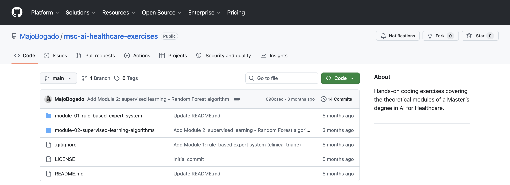

Projects — coursework
When I started the master's program, I noticed it was heavily oriented toward doctors who wanted to learn about AI — and while I managed to get in with my unconventional background (they accepted me based on work experience), I wasn't a doctor. I came from a different world, having touched a little bit of everything. I was looking for something specific, and I knew from the start that I'd have to carve out my own path to get the most out of it.
That's why I decided to do this series of exercises.
The program isn't finished yet, and this practice competes with the master's formal requirements, my 9-to-5 job, and other projects like this site and Meni — not to mention new things constantly emerging in the industry that make you want to explore, like JEPA.
So, what have I done so far?
An exercise to understand how rule-based expert systems work — their limitations and the cases where they actually make sense.
Then I ventured into supervised learning algorithms:

With each exercise, I kept asking questions, testing things, comparing algorithms — and especially using the results to understand potential use cases. The key insight: it's not about predicting with 100% accuracy. It's about building indicators that support doctors — as triage tools, decision aids, ways to flag the most sensitive cases and reduce cognitive load. The goal isn't blind trust in the model; it's co-designing standards and workflows together with clinicians so this actually works for everyone.
There are still plenty of concepts left to explore. What's missing most of the time is just time. I'll admit I'm a little envious of people who parallelize work across 50 AI agents — if they can actually pull it off while maintaining quality. Most of these projects demand my full focus to ask the right questions, keep iterating, incorporate concepts and build things that makes sense for me.